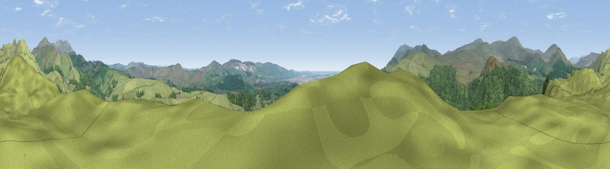

Haw Hill
#5270 in England · top 35% of its area beats it · near Broughton in FurnessWhere it is
The exact computed spot (SD 20743 89820). Click the marker for map links.
The view, rendered

A 360° render of this exact spot computed from the terrain model, tree cover and land cover — summer colours, afternoon light, calibrated against photographs of famous viewpoints. Real trees, hedges and buildings will differ in detail.
The panorama
Grey silhouette: terrain skyline in each direction (720 bearings, Earth curvature and refraction included). Dashed green: skyline with trees (+15 m) and buildings (+8 m) as obstacles. Blue strip: how far the ground is visible on each bearing.
Where the view opens
Wedge length = distance to the farthest visible ground on that bearing (vegetation-aware). Rings at 10, 25 and 50 km.
What fills the view
77% grassland · 21% woodland ·
Angular shares of the visible panorama (visual magnitude), not map area. Landscape diversity 0.26 (0–1 Shannon).
Key numbers
More beautiful places nearby
The staircase of upgrades: each row has a higher view potential than everything closer. Driving times are estimates from straight-line distance, calibrated against real road routing — check an actual route before setting out.
| Place | Direction | Drive | Score |
|---|---|---|---|
| Fox Haw | NNE · 4 km | ~10 min | 79.6 |
| Viewpoint near Hallthwaites | WSW · 5 km | ~11 min | 79.9 |
| Caw | NNE · 5 km | ~11 min | 83.4 |
| Viewpoint near Whitbeck | WSW · 8 km | ~17 min | 85.9 |
| Viewpoint near Whitbeck | SW · 9 km | ~17 min | 88.1 |
| Viewpoint near Whitbeck | WSW · 10 km | ~19 min | 88.3 |
| Viewpoint near Boot | NNW · 15 km | ~28 min | 88.9 |
| Viewpoint near Finsthwaite | E · 18 km | ~31 min | 90.3 |
54.29782, -3.21932 · source: dobih hill · position refined by local search. Computed location — check access rights before visiting.